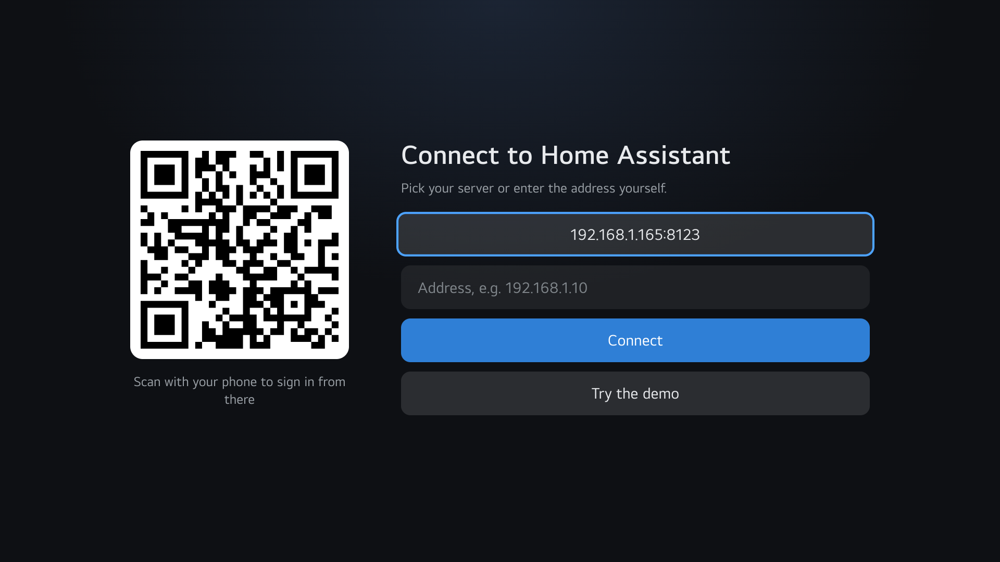
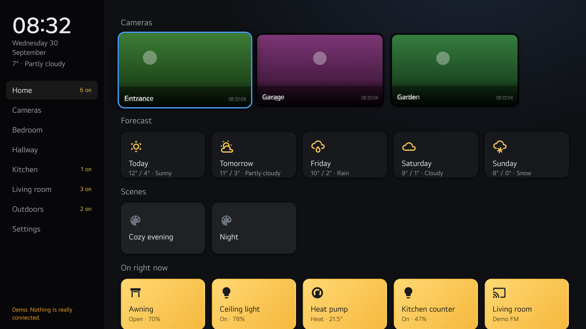
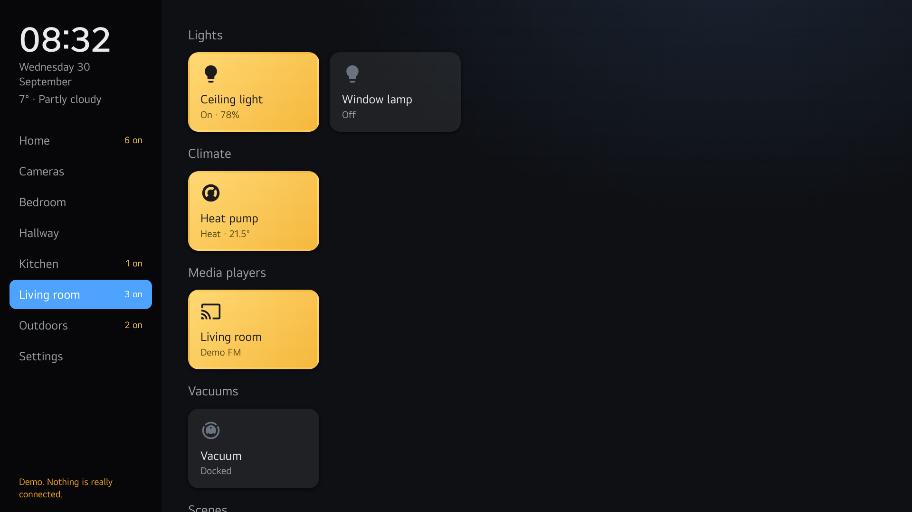
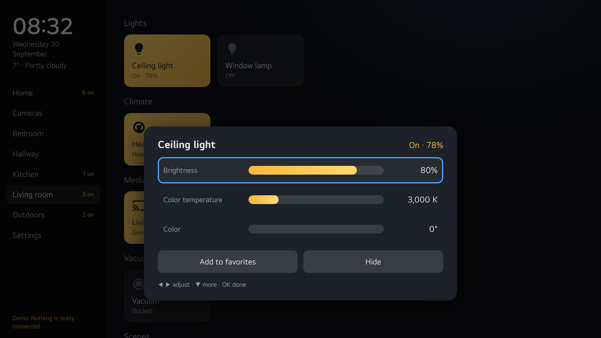
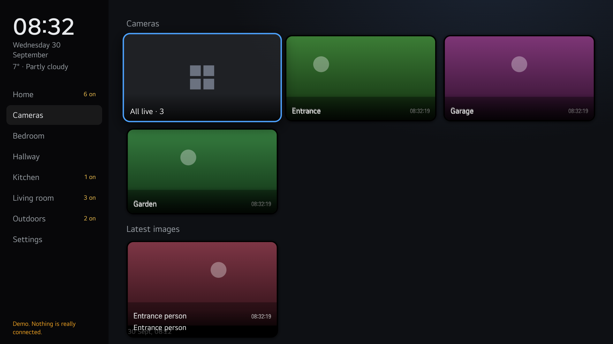
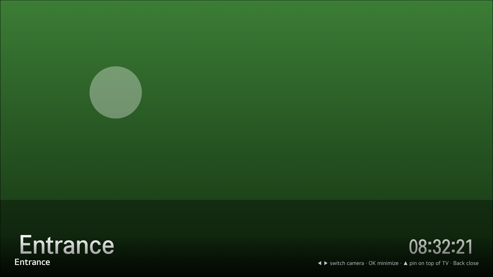
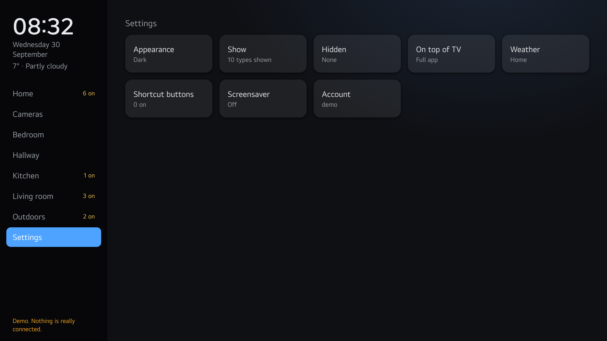
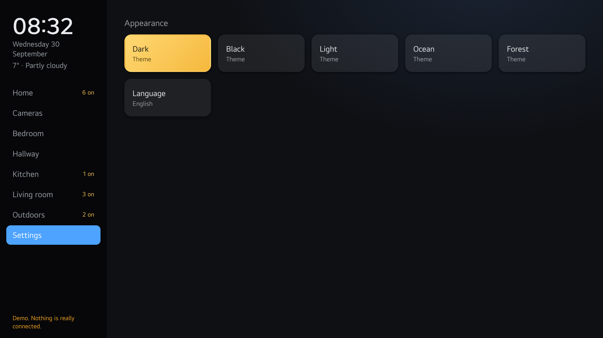
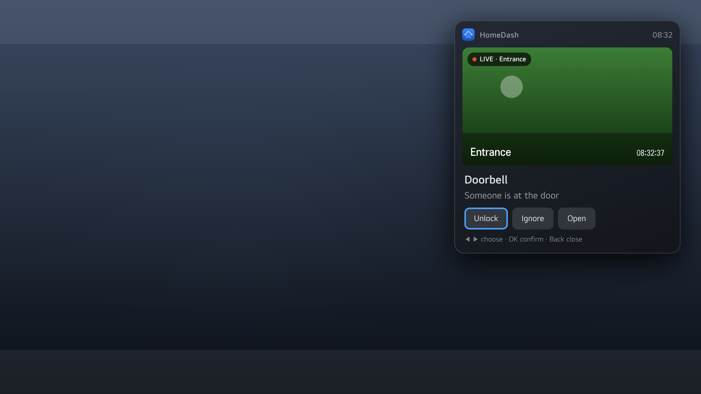

UX scenario for app review · App ID io.github.haansen.homedash · Version 1.0.0 · Web app · 1920 × 1080 · webOS 23 and later
1. What the app is
HomeDash shows a Home Assistant smart home on the TV: rooms, lights, cameras, sensors, climate and more, controlled with the remote. It also lets Home Assistant show notifications on the TV. Home Assistant is an open-source home automation system that runs on the user's own server at home. The app connects only to that server.
For testing without a Home Assistant server: choose Try the demo on the first screen. The demo contains a complete example home (five rooms, three cameras, lights, climate, sensors, scenes, weather) and every feature works. Nothing is really connected. All steps below can be done in the demo.
2. Remote control
Button
What it does
Arrow keys
Move between the menu on the left and the tiles. Left from the first tile goes to the menu. Up/down in the menu switches page immediately.
OK (short press)
Toggle a light or switch, run a scene, open a camera.
OK (long press, about one second)
Open the panel for the tile: brightness, color, temperature, volume, modes, alarm code, history, favorite and hide.
Back
Close a panel, camera or notification. From a tile: go to the menu. From the menu: exit the app.
Color and number buttons
Optional shortcuts assigned in Settings → Shortcut buttons.
Magic Remote pointer
Fully supported: hover, click, click-and-hold for the panel, wheel to scroll.
3. First launch
Start the app. The first screen searches the local network for a Home Assistant server and shows a QR code. (Testers: skip to step 3.)
With a server: choose it and sign in with username and password on the TV, or scan the QR code and sign in from a phone.
Without a server: press down to Try the demo and press OK. The app opens the Home page of the demo home.

First screen with network search, QR code and the demo button

Home page after signing in or starting the demo
4. Test scenarios
4.1 Home page
The Home page shows cameras in a row, the weather forecast, scenes, favorites and everything that is on right now. The menu shows the number of active devices per room.
Move right into the tiles and down through the sections. Press OK on a light under "On right now": it turns off and the tile changes color. Press OK again: it turns on.
4.2 Rooms
Press left to the menu and down to Living room. The page changes as soon as the menu item is focused.
Press right. Tiles are grouped by type: Lights, Climate, Media players, Vacuums, Scenes.
Hold OK on Ceiling light. A panel opens with Brightness, Color temperature and Color. Left/right changes the value, down moves to the next row, OK or Back closes.
Hold OK on Heat pump. The panel shows Temperature and the rows Mode and Fan; left/right cycles the options.
Hold OK on Living room (media player). The panel shows Volume, Source and the buttons previous, play/pause, next and mute.

A room

Panel for a light
4.3 Cameras
Go to Cameras in the menu. The first tile "All live" opens the camera wall with all cameras at once; Back closes it.
Press OK on a camera: it opens full screen. Left/right switches camera, OK shrinks it to a small picture-in-picture in the corner so you can keep using the app, Back closes.
Under "Latest images", press OK on an image entity to view it full screen.

Camera wall

Full-screen camera
4.4 Hall: lock and alarm
Go to Hallway. Press OK on Front door (lock). The app asks for a second OK before unlocking; press OK again and the state changes to Unlocked.
Hold OK on Home alarm. A number pad appears; enter digits with OK, then move down to the buttons Disarm, Arm home, Arm away.
4.5 Favorites and hiding
Hold OK on any tile and choose Add to favorites. The tile now appears under Favorites on the Home page.
Hold OK on a tile and choose Hide. It disappears and a message says where to restore it: Settings → Hidden → Show again.
4.6 Settings
Go to Settings. Each submenu shows its current value. Back inside a submenu returns to the list.
Appearance: choose a theme; it applies immediately. The last tile changes the app language and reloads the app.
Show: which entity types are shown. The list is built from the types that exist in the connected home.
Weather: choose which weather source feeds the clock area and the forecast.
Shortcut buttons: press any remote button to see its code; assign a color or number button to a light, scene or camera.
Screensaver: choose after how many minutes it starts, cameras or clock only, and the transition. Start now previews it. Any button exits; OK on a camera opens that camera.
Home Assistant: adds the TV to Home Assistant and creates notification scripts. Not available in the demo (the app says so).
Account: sign out. This returns to the first screen.

Settings

Screensaver
4.7 Notifications
Home Assistant can start the app with a message, a camera and buttons. The app shows a card with the text and a live camera image; Back closes it, the buttons perform actions in Home Assistant. In the demo, notifications cannot be triggered from outside, so this scenario needs a real Home Assistant.

Notification card (shown here on a neutral backdrop)
4.8 Exit
Press Back until the menu is focused, then Back once more: the app exits to the launcher.
5. Network and privacy
The app communicates only with the user's own Home Assistant server (WebSocket and HTTP on the local network, or an address the user enters). It uses no server operated by the developer, and no analytics or advertising.
The sign-in is stored on the TV as a Home Assistant refresh token; the password is never stored. Sign out in Settings removes it.
While the QR code is shown, a small web server runs on the TV so that a phone on the same network can send the sign-in details. It stops when the user is signed in.